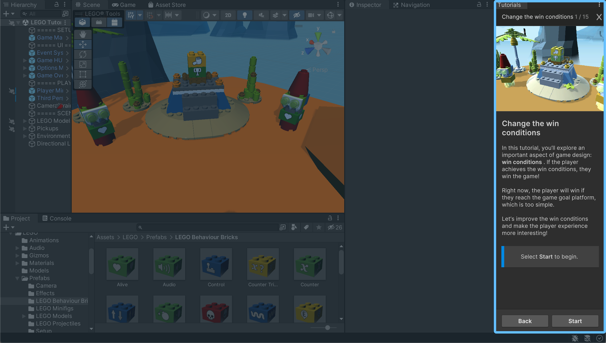

Op deze pagina zijn de opdrachten te vinden welke passend zijn bij de lesstof welke tijdens de Virtual Environments workshop zijn behandeld
Voor het Unity gedeelte van de workshop was het de bedoeling om 2 tutorials te volgen tot het modify your own game gedeelte. De bewijslast voor het voldoen van de opdracht zal hieronder in video's en screenshots opgenomen zijn. 
Opdracht: Voeg diverse primitieve vormen toe aan het document. Maak een opname van het resultaat van je bestand en voeg deze toe aan je portfolio. Voor deze opdracht heb ik ervoor gekozen om te spelen met groottes, kleur en kantelingen van vormen. Het resultaat hiervan in in onderstaande video te bekijken.
Opdracht: Experimenteer / tinker met wat gegeven voorbeelden. Probeer de code te veranderen en iets anders te maken. Maak een opname van het resultaat van je bestand en voeg deze toe aan je portfolio. Voor deze opdracht leek het mij leuk om de objecten synchroon te laten draaien. Het resultaat hiervan in in onderstaande video te bekijken.
Opdracht: Experimenteer met fuse interactie en zie wat er gebeurd. Maak een opname van het resultaat van je bestand en voeg deze toe aan je portfolio. Voor deze opdracht heb ik eerst gekeken of ik de cursor een vierkante vorm kon geven, eerst moest ik de scale van de cursor aanpassen omdat deze veels te groot en niet te besturen was. Nadat ik de cursor kleiner had gemaakt bleek hij als vierkant helaas niet te werken. Uiteindelijk heb ik de cursor weer veranderd in een cilinder en deze aangepast in dikte en kleur. Verder heb ik ervoor gezorgd dat het eerste blok een oranje kleur krijgt wanneer de cursor erop staat en wanneer de cursor het blok verlaat kleurt het blok paars. Voor het tweede blok heb ik de fuse tijd aangepast zodat deze meteen harder gaat draaien wanneer de cursor op het blok staat. Bewijsmateriaal voor deze veranderingen zijn hieronder te vinden in de vorm van een afbeelding en twee video's.